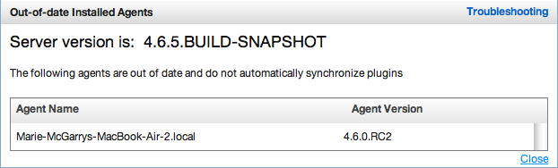

|
vFabric Hyperic 4.6.6 : ui-Administration.Plugin.Manager.Troubleshooting
This page last changed on Feb 28, 2012 by mmcgarry.
TroubleshootingThe Out-of-date installed Agents popup lists the name and version of each agent that is reporting to the Hyperic Server but not synchronizing plugins. The Hyperic Agent must be the same or later version as the Hyperic Server for plugin synchronization to occur. For more information, see Plugin Deployment and Management.  |
| Document generated by Confluence on Jun 01, 2012 08:28 |